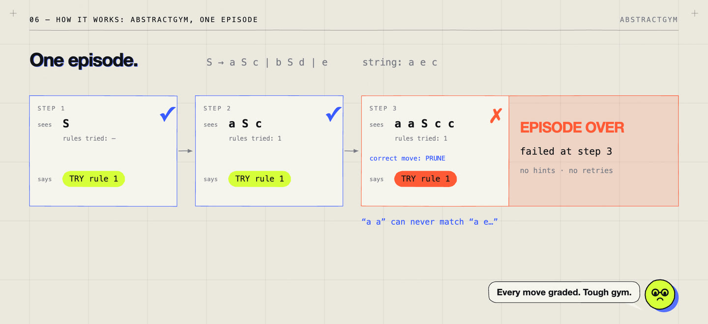
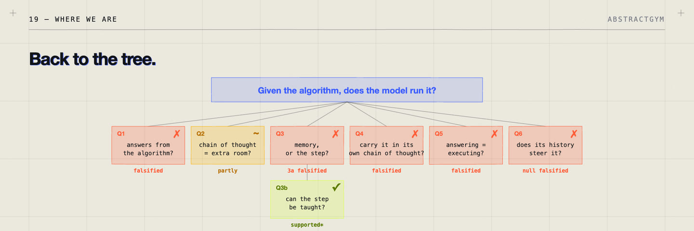
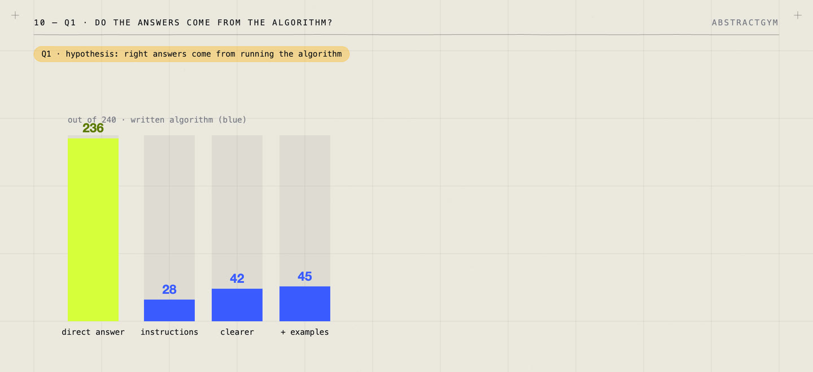
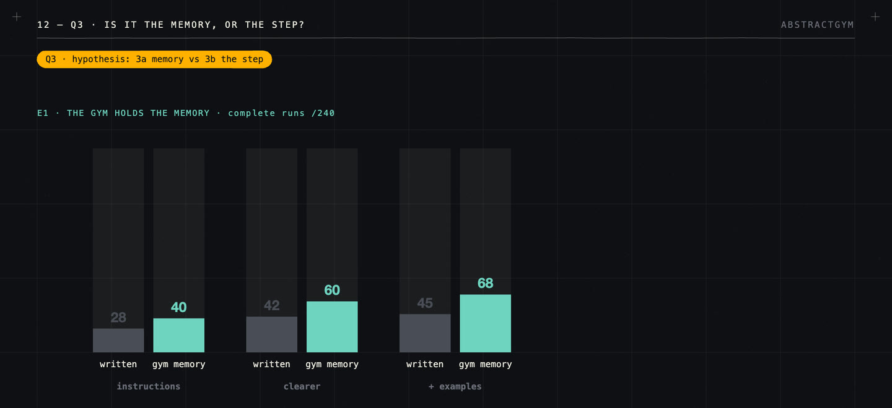
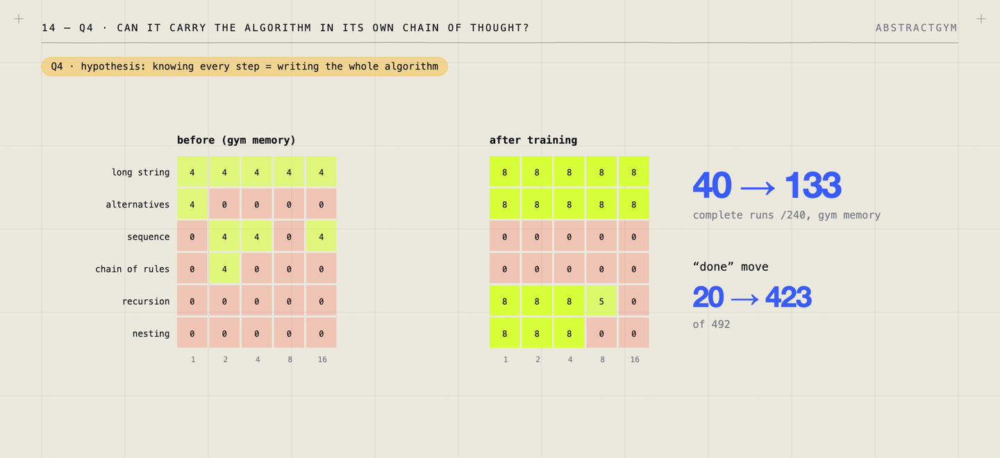
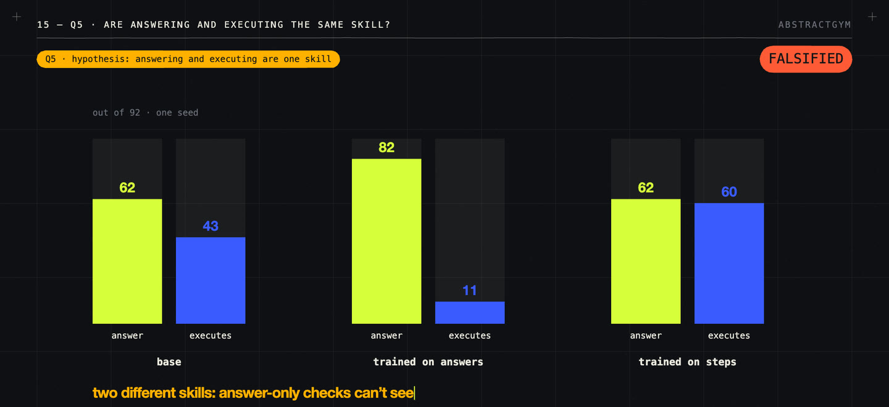
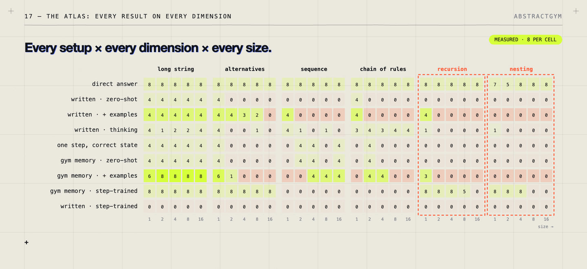
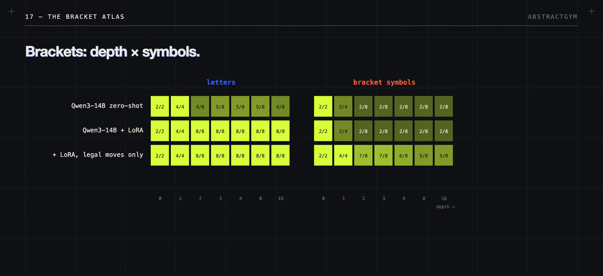

/ 22:11 VIDEO · 25 MIN READ
AbstractGym:
can an LLM execute a program?
AbstractGym is a small reinforcement-learning environment in which the correct algorithm is known exactly and every step of a model’s work is checked. We used it to take apart one question: when a language model gets the right answer, did it run the procedure that produces that answer? This guide covers how the gym works, the six questions we asked, every measured result, the follow-up experiments, and what remains open.
Watch on YouTube ↗ · Code and results on GitHub ↗ · Checkpoints on Hugging Face ↗
01 / The result that started it
We gave Qwen3-14B 240 small logic puzzles. Asked only for the answer, it was right 236 times. Asked to work each puzzle out by following the exact procedure that solves it, step by step, it got all the way through 28 times.
So the right answers did not come from the procedure. That gap is what AbstractGym is built to measure, and the rest of this guide is an attempt to explain it: whether the model lacks memory, lacks the step, or lacks the ability to carry many steps on its own; whether thinking longer helps; and whether training can close the gap.
The film is self-contained. For the theory underneath, how much one forward pass can compute and why memory matters, the Understanding Transformers series is a good companion, but you don’t need it.
02 / Why right answers aren’t enough
There are three reasons to care about the gap between answer and work.
A right answer can come from the wrong reasons. A student can guess, pattern-match or remember. If you only check the final number, you can’t tell. The same is true for a model.
Much of what we want from models is following a procedure. Run this algorithm, apply these rules, carry out these steps in order. One wrong step anywhere ruins the result, and an answer reached by luck on a short task won’t be there on a longer one.
Reasoning models are trained mostly against answer checkers. Math problems with known answers and code with unit tests give a reward at the end. That is a strong signal for getting answers right, and a weak one for how they were reached. We wanted the opposite: an environment where the right procedure is known exactly and every action can be graded.
03 / What is “reasoning” in a model?
A transformer does a fixed amount of computation per token: one pass through a fixed number of layers. Every extra token it writes buys one more pass. That is the mechanical reason chain of thought can help, and it leaves two pictures of what the written tokens are.
| Picture | The tokens are… | What you would expect |
|---|---|---|
| Extra room | Scratch space: more passes for some internal method the text doesn’t show | More tokens help; the text need not match any algorithm |
| The algorithm | The method itself: each token a real, checkable step | The text can be graded step by step, and its errors predict wrong answers |
Theory says the second picture is possible. With enough written steps, a transformer can in principle carry out any computation, while answering in a single pass is limited to problems that need few serial steps (Merrill & Sabharwal, 2024; Li et al., 2024; Feng et al., 2023, each under its own assumptions).
But “can” is not “does”. Small models trained to write meaningless filler dots still solved synthetic problems they couldn’t solve in one pass, though only with special, dense supervision (Pfau, Merrill & Bowman, 2024). And when the answers in a prompt’s worked examples were biased, for example always “A”, models’ answers shifted while their written explanations never mentioned the bias (Turpin et al., 2023).
To tell the two pictures apart, you need a task where the right algorithm is known exactly. Then you can make the model write it out and check every step, let it answer directly, or let it think freely, and compare.
04 / How AbstractGym works
The puzzles: grammars
A grammar is a set of rewriting rules, a recipe for building strings. Take S → a S c | b S d | e. The capital S is a placeholder; small letters are real characters. Starting from S: S → a S c → a b S d c → a b e d c. No placeholders remain, so that is a finished string.
Everything this grammar builds has the same shape: every a matched by a c, every b by a d, nested like brackets. Grammars of this kind, called context-free, describe nesting, which is why programming languages are defined with them. Checking nesting at any depth needs a memory that can grow, because you have to remember everything that is still open.
The algorithm: search with pruning and backtracking
Each puzzle asks one question: can this grammar build this string? There is a straightforward algorithm. Start from S, always rewrite the leftmost placeholder, and try the rules in their written order. After each try, compare the start of what you’ve built with the string. If it already disagrees, cut the branch off (prune) and go back to try the next rule (backtrack).
On a e c: rule 1 gives a S c, which matches so far. Rule 1 again gives a a S c c, which starts “a a” while the string starts “a e”: prune, back up. Rule 2 gives “a b…”: prune, back up. Rule 3 gives a e c: accept. That is nine actions. On a e d, every branch dies, the search backs all the way out, and runs out of options: no, in nineteen actions.
Because the rewrite order and the rule order are fixed, there is exactly one correct sequence of actions for every puzzle. Written out, it is a chain of thought in which every step can be checked. The canonical trace comes from trace.py. Five action types cover it: TRY rule k, PRUNE, BACK, DONE (a branch is exhausted) and ACCEPT.
What an RL environment is
Reinforcement learning has two players: an agent that acts and learns, and an environment it acts in. The environment shows an observation, the agent picks an action, and the environment changes, shows the next observation and gives a reward. A “gym” is a collection of such environments with the loop built in, so any agent can be plugged in to be tested or trained; the name comes from OpenAI Gym. Language models fit the same loop: the prompt is the observation, the model’s output is the action, and a checker gives the reward.
AbstractGym as an environment

a e c. Step 3 should be PRUNE; the model tries rule 1 again and the episode ends.| Part | What it is |
|---|---|
| Observation | The grammar, the string, and the search state: the partial strings being explored and the rules already tried |
| Action | One search move: TRY rule k, PRUNE, BACK, DONE or ACCEPT |
| Step | The environment applies the move and shows the next state |
| Check | A strict validator: it knows the one correct move at every point, and the first wrong move ends the episode. No partial credit, hints or retries (controller.py) |
| Generator | Makes grammars and strings at controlled sizes: longer, deeper, more branching (dataset.py, complexity.py) |
| Truth | An independent Earley-style parser decides membership, so the label never depends on our own search code (oracle.py) |
Two design details matter. First, every string appears twice, once with a grammar that accepts it and once with one that rejects it. A model that ignores the grammar therefore scores exactly 50%, so 50% always means “ignored the question”. Second, the main suite crosses six grammar families with five sizes (1, 2, 4, 8 and 16), eight puzzles per cell (four yes, four no): 240 in all. That shows not just how often a model fails, but where.
So far the gym has been used to evaluate models and to generate supervised training data. All training reported here is supervised fine-tuning (LoRA adapters, plus tiny transformers trained from scratch); plugging the environment into RL training, with the step check as the reward, is the natural next step.
05 / Five ways to run the same puzzle
Because the environment controls what the model sees, the same puzzle can be run in different ways. Comparing them separates “knows the answer”, “knows the step” and “can carry the steps”.
| Lane | What the model does | Question it answers |
|---|---|---|
| Direct answer | Says yes or no in a few tokens | What can it do implicitly? |
| Think, then answer | Thinks freely in its own words first | Does extra room help? |
| Written algorithm (full trace) | Writes the whole action sequence on its own | Can the chain of thought be the algorithm? |
| Gym memory (live state) | Picks each next move; the gym keeps the partial strings and rules tried | Is bookkeeping the problem? |
| One step, correct state | Shown the correct state at every step, asked only for the next move | Does it know the step at all? |
All runs use Qwen3 (1.7B and 14B) on one B200 with greedy decoding, thinking off unless stated, no retries and no repairs. Every failure stays in every denominator.
06 / The question tree
The study is organised as one root question, given the algorithm, does the model run it?, split into six. Each comes with a hypothesis we tried to break, an experiment that could falsify it, and a verdict.

| Question | Hypothesis tested | Key result | Verdict |
|---|---|---|---|
| Q1 Answers from the algorithm? | Right answers come from running it | 236 vs 28 / 240 | Falsified |
| Q2 Chain of thought = extra room? | More room to think fixes execution | 28 → 44 / 240 | Partly |
| Q3 Memory, or the step? | 3a: it knows the step, loses the bookkeeping | 40–68 / 240 with perfect memory | 3a falsified |
| Q3b Can the step be taught? | Teaching the step fixes execution | 43 → 60 (82 legal-only) / 92 | Supported, with caveats |
| Q4 Carry it in its own chain of thought? | Knowing every step means writing the whole run | 133 vs 0 / 240 | Falsified |
| Q5 Answering = executing? | Training either improves both | 82 / 11 vs 62 / 60 | Falsified |
| Q6 Does its history steer it? | Null: each step is decided fresh | 502 → 214 / 576 | Null falsified |
07 / Q1: do the answers come from the algorithm?
Hypothesis. The model gets its right answers by running the algorithm, so a right answer should come with correct work.
Experiment. The same 240 puzzles in two lanes: answer directly, or write out the whole algorithm. Qwen3-14B, instructions only, then clearer instructions, then worked examples.

Result. Direct answers: 236 right. Written algorithm: 28 complete runs with instructions, 42 with clearer instructions, 45 with examples. Puzzle by puzzle:
| Work correct | Work wrong | |
|---|---|---|
| Answer right | 28 | 208 |
| Answer wrong | 0 | 4 |
Verdict: falsified. A right answer came with wrong work 208 times, and the reverse never happened. The answers come from some other, implicit route. The flipped pairs rule out ignoring the grammar, but not every shortcut, so we don’t yet know what that route is.
08 / Q2: is chain of thought just extra room?
Hypothesis. The model can run the algorithm; it just needs room to think.
Experiment. The same model and puzzles with thinking mode on and the same token limits.
Result. The written algorithm improves from 28 to 44 of 240, and on the bracket task (below) from 30 to 43 of 92. It costs about 14× the tokens: 127,635 against 9,352 on the bracket full traces. Under the same limits the short lanes break: direct answers fall from 236 to 9 of 240, because 231 calls ran out of room before answering.
Verdict: partly supported. Extra room helps but comes nowhere near fixing execution, and the budget decides the outcome. A generous-budget run is part of the follow-up below.
09 / Q3: is it the memory, or the step?
Two competing hypotheses. 3a: the model knows each step but loses track of the bookkeeping. 3b: the step itself is missing.
Experiment 1. Take the bookkeeping away. The gym holds the search state exactly and the model only picks each next move. If 3a is right, this should fix it.

Result. 40 of 240 with instructions, 60 with clearer instructions, 68 with examples. Better, not fixed.
Experiment 2. To make it sharp, we shrank the puzzle to nested pairs, like brackets, and let the gym hold an exact stack: a pile where only the top is touched. The model chooses one of five moves: push, center, pop, accept or reject. The suite has 92 cases at depths 0 to 16, written with letters or with bracket symbols (brackets.py).
Result. 43 of 92. With bracket symbols the model fails from depth two on, mostly by writing /] where ] is required.
Verdict: 3a falsified. Perfect memory isn’t enough. That points to 3b, which the next question tests directly.
10 / Q3b: can the step be taught?
Hypothesis. If the step is what’s missing, teaching it should fix execution when the gym holds the memory.
Experiment 1: a tiny transformer. 68 thousand parameters, trained from scratch only on practice symbols and shallow depths, given the symbols already translated into roles.
Result. 92 of 92 on three seeds, every possible input checked, and perfect at depths 32 and 64, far beyond training. The catch: trained on raw characters instead of roles, the same model completes 0 of 92. The step is easy to learn once the symbols are bound to roles; the binding is the hard part.
Experiment 2: the real model. Qwen3 trained on the step with a small LoRA adapter, the gym holding the stack.
| Setup | Complete runs / 92 |
|---|---|
| Qwen3-1.7B, zero-shot → trained | 0 → 43 |
| Qwen3-14B, zero-shot → trained | 43 → 60 |
| Qwen3-14B trained, output restricted to legal moves | 82 |
| Qwen3-14B, three training seeds | 60 / 36 / 60 |
| Fresh punctuation symbols | 4–10 / 78 |
Verdict: supported, with caveats. Teaching the step works, but ten errors remain that aren’t formatting, one seed in three learns a much worse step, and unfamiliar symbols almost entirely fail. What gets learned depends on the symbols, the setup and luck.
11 / Q4: can it carry the algorithm in its own chain of thought?
Hypothesis. A model that knows every step can also write the whole algorithm out by itself.
Experiment. Train Qwen3-14B on every step of the full grammar search, pruning and backtracking included (11,002 states, three epochs). Run it with the gym holding the memory, and writing everything in its own context.

Result. With the gym’s memory, complete runs go from 40 to 133 of 240, and the move that closes an exhausted branch (DONE) goes from correct 20 times out of 492 to 423. In its own chain of thought, the same trained model drops from 28 to 0: it gets stuck repeating “DONE, BACK, DONE, BACK” until it runs out of space.
Verdict: falsified. Knowing the steps is not the same as carrying the algorithm in your own context. Where the state lives matters as much as the model.
12 / Q5: are answering and executing the same skill?
Hypothesis. They are one skill, so training either should improve both.
Experiment. Two adapters on the same base model and the 92-case bracket suite: one trained only on yes/no answers, one trained only on steps.

| Setup | Answers right | Executions complete |
|---|---|---|
| Base | 62 | 43 |
| Trained on answers | 82 | 11 |
| Trained on steps | 62 | 60 |
Verdict: falsified. Training on answers lifts answers and collapses execution. Training on steps lifts execution and leaves the answers unchanged, case for case. They behave like two different skills, and a checker that only looks at answers would never notice the collapse.
13 / Q6: does its own history steer the next step?
Null hypothesis. The model ignores what it has already written; each step is decided fresh.
Experiment. Hand the zero-shot 14B model a history containing four planted wrong early moves, and count how many later moves it still gets right.
Result. Correct later moves fall from 502 to 214 out of 576.
Verdict: null falsified. The written history matters. One caution: a wrong early move really does change the correct continuation, so this does not yet show that errors snowball on their own.
14 / The complexity atlas: every result on every dimension
The 240 puzzles vary along six dimensions, each stressing a different part of running the algorithm.
| Dimension | Example grammar | What it stresses |
|---|---|---|
| Long string | S → a a a a | Comparing many symbols |
| Alternatives | S → b | b b | b b b | a | Trying and pruning many branches |
| Sequence | S → A A A A ; A → a | Finishing placeholders in order |
| Chain of rules | S → N1 → N2 → N3 → a | Many steps before any character appears |
| Recursion | S → a S | c | A rule calling itself again and again |
| Nesting | S → a S b | c | Matched pairs: a growing memory |
Here is every setup projected onto those dimensions, summed over the five sizes (each cell out of 40; the film shows the full size-by-size map).
| Setup (Qwen3-14B) | Long | Alt. | Seq. | Chain | Rec. | Nest. | Total |
|---|---|---|---|---|---|---|---|
| Direct answer | 40 | 40 | 40 | 40 | 40 | 36 | 236 |
| Written · zero-shot | 20 | 4 | 0 | 4 | 0 | 0 | 28 |
| Written · + examples | 20 | 13 | 4 | 4 | 4 | 0 | 45 |
| Written · thinking | 13 | 5 | 6 | 18 | 1 | 1 | 44 |
| One step, correct state | 20 | 4 | 12 | 4 | 0 | 0 | 40 |
| Gym memory · zero-shot | 20 | 4 | 12 | 4 | 0 | 0 | 40 |
| Gym memory · + examples | 38 | 7 | 12 | 8 | 3 | 0 | 68 |
| Gym memory · step-trained | 40 | 40 | 0 | 0 | 29 | 24 | 133 |
| Written · step-trained | 0 | 0 | 0 | 0 | 0 | 0 | 0 |

Direct answers are right almost everywhere, at every size. Only a few small nesting puzzles slip. Whatever the model does inside, size doesn’t hurt it.
Every zero-shot success is a “yes”. The written algorithm works only on long strings and a handful of small cases, and all 28 of its successes are yes-puzzles, as are all 40 gym-memory successes. To say no, the search has to try every branch and close each one with DONE, and the zero-shot model almost never does. That is why so many cells sit at exactly 4 of 8.
Examples spread success a little. With examples and gym memory, success reaches sequences and chains, and 20 no-puzzles pass (48 yes, 20 no). Recursion and nesting, the dimensions that need deep bookkeeping, stay near zero.
Step training splits the map cleanly. Long strings and alternatives become perfect at every size. Recursion and nesting are perfect up to size 4, the deepest the training data went, then fade. Sequences and chains, which the training data didn’t contain, stay at zero. The learned step works where training reached, and stops at its edge (one seed).
Thinking helps a different dimension. It is the only setup that gets about half of the chain-of-rules puzzles at every size, but it does worse on long strings than plain instructions (13 against 20).
The bracket atlas
The bracket task has two dimensions of its own: depth, and which symbols are used.

| Setup | Letters, depth 0 → 16 | Bracket symbols, depth 0 → 16 |
|---|---|---|
| Qwen3-14B zero-shot | 2/2 4/4 4/8 5/8 5/8 5/8 4/8 | 2/2 2/4 2/8 2/8 2/8 2/8 2/8 |
| + LoRA on the step | all correct | 2/2 2/4 2/8 2/8 2/8 2/8 2/8 |
| + LoRA, legal moves only | all correct | 2/2 4/4 7/8 7/8 6/8 5/8 5/8 |
| Tiny model (roles) | all correct | all correct |
What the map says. Size alone is not the enemy. The model breaks on specific operations: saying no after an exhaustive search, keeping track of nested or chained structure, and binding unfamiliar symbols. Training fixes the dimensions and sizes it covers, not beyond. That last sentence is our interpretation of the measured pattern, not a theorem.
15 / Follow-up: richer supervision and distillation (A7)
After the film, we ran a small adaptation of Self-Play Search Distillation (Molfetta et al., 2026), which trains a model on the decision found by search rather than on the search itself. The question: do verified successor states or short alternative-branch traces teach a more reliable step than action labels alone? Six Qwen3-14B arms cross three kinds of supervision (next action; action + successor state; action + short branch consequences) with two objectives (supervised fine-tuning; on-policy distillation from a frozen teacher that sees the verified answer). An untrained control tests a much larger thinking budget. All arms share 512 starting states, one epoch and 128 updates. It is a one-seed pilot, not a reproduction of the paper.
| Condition | Full trace / 240 | Gym memory / 240 | Gym memory, shifted / 192 | Direct / 240 |
|---|---|---|---|---|
| Base | 28 | 38 | 16 | 236 |
| Action, SFT | 43 | 77 | 44 | 236 |
| Successor, SFT | 7 | 76 | 51 | 236 |
| Branches, SFT | 8 | 79 | 50 | 238 |
| Action, distillation | 33 | 34 | 13 | 236 |
| Successor, distillation | 36 | 34 | 12 | 236 |
| Branches, distillation | 39 | 39 | 16 | 237 |
| Thinking, large budget | 64 | 37 | 18 | 238 |
The shifted suite changes depth (levels 3, 6, 12, 24) and renames every symbol at once. What the pilot shows:
- Action-only SFT roughly doubles live execution: 38 → 77 of 240, and 16 → 44 of 192 on the shifted suite.
- Richer targets add little: −1 to +2 cases on the original suite, +6 to +7 on the shifted one, concentrated in the alternatives family. Shifted nesting, chains and sequences stay at zero for every SFT arm.
- Better steps can hurt full traces: the successor and branch arms fall to 7 and 8 of 240 written runs, mostly incomplete traces. Single-step skill does not transfer to emitting a whole execution.
- Distillation, in this recipe, stays near base (34–39 of 240 live). That is a negative result for a frozen-teacher, one-epoch setup, not evidence against SPSD in general.
- A bigger thinking budget lifts written traces from 28 to 64 of 240, but not live execution (38 → 37), at about 150× the completion tokens, and 49 calls still ran out of room.
16 / Related work
The ingredients aren’t new. What looks uncommon is the measurement: one exact algorithm, every step checked, matched ways of running it, and pairs that make ignoring the input score exactly chance. That claim rests on a targeted search, not an exhaustive one.
| Work | What it does | Relation to AbstractGym |
|---|---|---|
| Reasoning Core, RELIC | Grammar tasks with checked answers | Same puzzles, graded on the answer |
| Reasoning Gym | Generators of verifiable reasoning tasks | Many tasks, answer-level rewards |
| CLRS | Grades intermediate steps of classical algorithms | Step grading, for graph neural networks |
| Stream of Search | Trains on written-out search; about 2× accuracy on Countdown (51.27% vs 25.73%) | Search as text, without a canonical trace |
| Self-Play Search Distillation | Distils the decision found by search | Adapted in A7 |
ARC-AGI is the best-known neighbour (Chollet, 2019; ARC Prize). There, the algorithm is hidden and the hard part is finding it from a few examples. AbstractGym is the other half: the algorithm is given, and the hard part is running it exactly. One recent ARC result echoes ours: on the game-like ARC-AGI-3, a frontier model scored about 63% with a standard setup and nearly 100% with a harness that keeps its reasoning state between turns, as reported by ARC Prize in September 2026. ARC Prize itself says this is not proof of general intelligence.
17 / Where we are
The answers don’t come from the algorithm. Extra room helps, but not enough. Perfect memory alone doesn’t fix execution, because the step is missing, and the step can be taught, with caveats. Knowing the steps doesn’t mean carrying them in your own context. Answering and executing are separate skills. And the written history steers what comes next.
Still open:
- What is the internal route that produces the right answers?
- Does free thinking contain the algorithm, if we grade it for the canonical steps?
- Would a generous budget close the gap? A7 suggests not for live execution, at least with this model and budget.
- What happens with reinforcement learning, using the step check as the reward?
- Do the results hold across seeds, other model families, and genuinely new grammar families?
The practical lesson. If you need a model to follow a procedure reliably, don’t take a correct answer as proof. Write the procedure as explicit steps, keep the state outside the model, and check every step.
18 / Code, checkpoints and reproducing
Everything is in flavianv/abstractgym-public: the environment, the generators and oracle, the evaluation harness, the experiment configs and every result file. The main branch has 110 passing tests; the follow-up lives on the a7 branch with its own protocol and results. The main-branch experiments are written up in cfg_controller_experiments.md and a6_followup_results.md. The package has no runtime dependencies:
git clone https://github.com/flavianv/abstractgym-public
cd abstractgym-public
PYTHONPATH=src python3 -m pytest -qThe trained checkpoints are on Hugging Face:
- Tiny controllers: the 68k-parameter bracket models (roles and raw characters).
- Qwen3-14B bracket step and Qwen3-1.7B bracket step: LoRA adapters for Q3b and Q5.
- Qwen3-14B DFS step: the full-search step adapter from Q4.
- Qwen3-14B membership: the answers-only adapter from Q5.
- A7 arms: the six follow-up adapters.
Measured numbers come from our own runs and are pinned in the repository’s result files; numbers attributed to papers or to ARC Prize are as reported by their authors.
Further reading
- The Expressive Power of Transformers with Chain of Thought, Chain of Thought Empowers Transformers to Solve Inherently Serial Problems and Towards Revealing the Mystery behind Chain of Thought — what written steps add, in theory.
- Let’s Think Dot by Dot — filler tokens.
- Language Models Don’t Always Say What They Think — unfaithful explanations.
- Stream of Search and Self-Play Search Distillation — training on search.
- On the Measure of Intelligence, Combining Induction and Transduction for Abstract Reasoning and The Surprising Effectiveness of Test-Time Training for Abstract Reasoning — ARC-AGI.
- Understanding Transformers — the companion series: circuits, one forward pass, training, systems, universality.